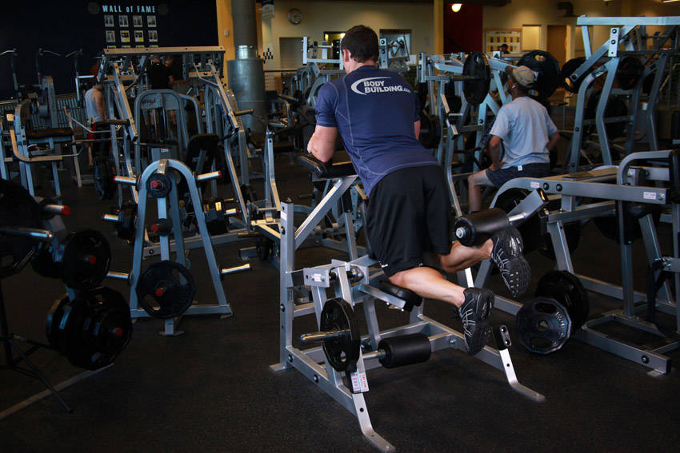

- Adjust the machine lever to fit your height and lie with your torso bent at the waist facing forward around 30-45 degrees (since an angled position is more favorable for hamstrings recruitment) with the pad of the lever on the back of your right leg (just a few inches under the calves) and the front of the right leg on top of the machine pad.
- Keeping the torso bent forward, ensure your leg is fully stretched and grab the side handles of the machine. Position your toes straight. This will be your starting position.
- As you exhale, curl your right leg up as far as possible without lifting the upper leg from the pad. Once you hit the fully contracted position, hold it for a second.
- As you inhale, bring the legs back to the initial position. Repeat for the recommended amount of repetitions.
- Perform the same exercise now for the left leg.
This exercise appears in Programmd training programs. Take the quiz to find one for your gym.
Find your program